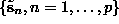
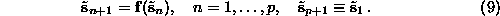
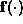
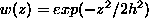
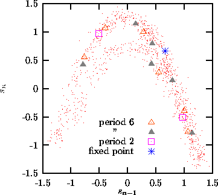

Next: Locally linear prediction
Up: Nonlinear prediction
Previous: Simple nonlinear prediction
As an application of simple nonlinear phase space prediction, let us discuss a
method to locate unstable periodic orbits embedded in a chaotic attractor. This
is not the place to review the existing methods to solve this problem, some
references include [47, 48, 49, 50]. The TISEAN package
contains a routine that implements the requirement that for a period p orbit
 of a dynamical system like Eq.( ) acting on
delay vectors
) acting on
delay vectors

With unit delay, the p delay vectors contain p different scalar entries,
and Eq.() defines a root of a system of p nonlinear equations in
p dimensions. Multidimensional root finding is not a simple problem. The
standard Newton method has to be augmented by special tricks in order to
converge globally. Some such tricks, in particular means to select different
solutions of Eq.() are implemented in [50]. Similarly
to the problems encountered in nonlinear noise reduction, solving
Eq.() exactly is particularly problematic since 
is unknown and must be estimated from the data. In Ref. [49], approximate
solutions are found by performing just one iteration of the Newton method for
each available time series point. We prefer to look for a least squares
solution by minimizing
instead. The routine upo uses a standard Levenberg-Marquardt algorithm to
minimize (). For this it is necessary that is
smooth. Therefore we cannot use the simple nonlinear predictor based on locally
constant approximations and we have to use a smooth kernel version,
Eq.(), instead. With , the kernel
bandwidth h determines the degree of smoothness of . Trying to
start the minimization with all available time series segments will produce a
number of false minima, depending on the value of h. These have to be
distinguished from the true solutions by inspection. On the other hand, we can
reach solutions of Eq.() which are not closely visited in the time
series at all, an important advantage over close return
methods [47].

Figure:
Orbits of period six, or a sub-period thereof, of the Hénon map,
determined from noisy data. The Hénon attractor does not have a period
three orbit.
It should be noted that, depending on h, we may always find good minima of
(), even if no solution of Eq.(), or not
even a truly deterministic dynamics exists. Thus the finding of unstable
periodic orbits in itself is not a strong indicator of determinism.
We may however use the cycle locations or stabilities as a discriminating
statistics in a test for nonlinearity, see Sec. .
While the orbits themselves are found quite easily, it is surprisingly
difficult to obtain reliable estimates of their stability in the presence of
noise. In upo, a small perturbation is iterated along the orbit and the
unstable eigenvalue is determined by the rate of its separation from the
periodic orbit.
The user of upo has to specify the embedding dimension, the period (which
may also be smaller) and the kernel bandwidth. For efficiency, one may choose
to skip trials with very similar points. Orbits are counted as distinct only
when they differ by a specified amount. The routine finds the orbits, their
expanding eigenvalue, and possible sub-periods. Figure shows the
determination of all period six orbits from 1000 iterates of the Hénon map,
contaminated by 10% Gaussian white noise.
Next: Locally linear prediction
Up: Nonlinear prediction
Previous: Simple nonlinear prediction
Thomas Schreiber
Wed Jan 6 15:38:27 CET 1999